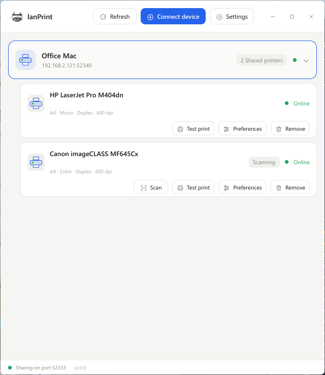
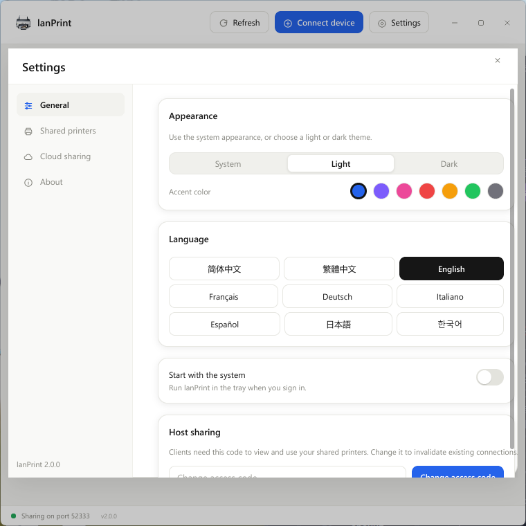
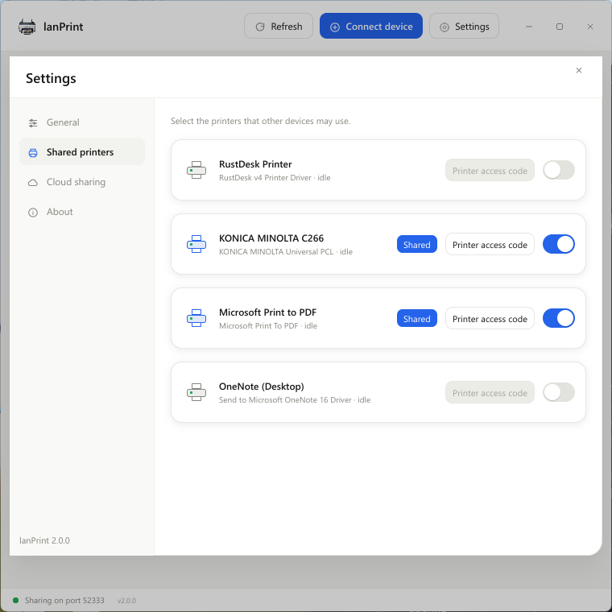
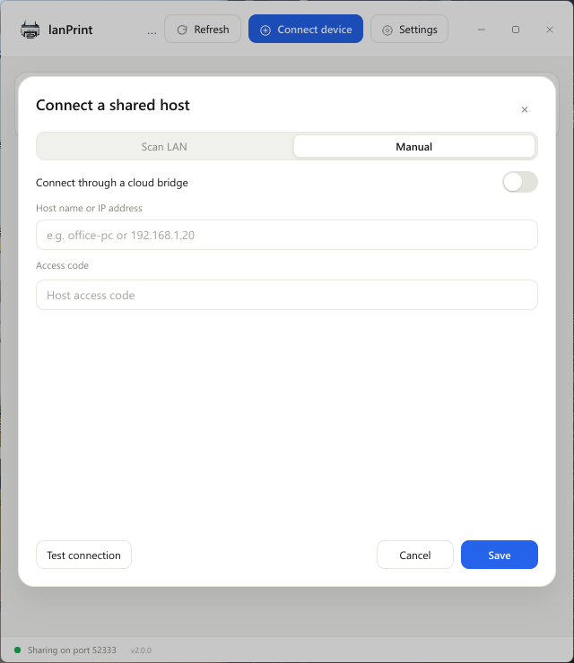
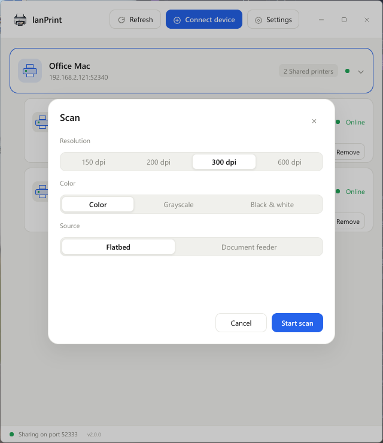
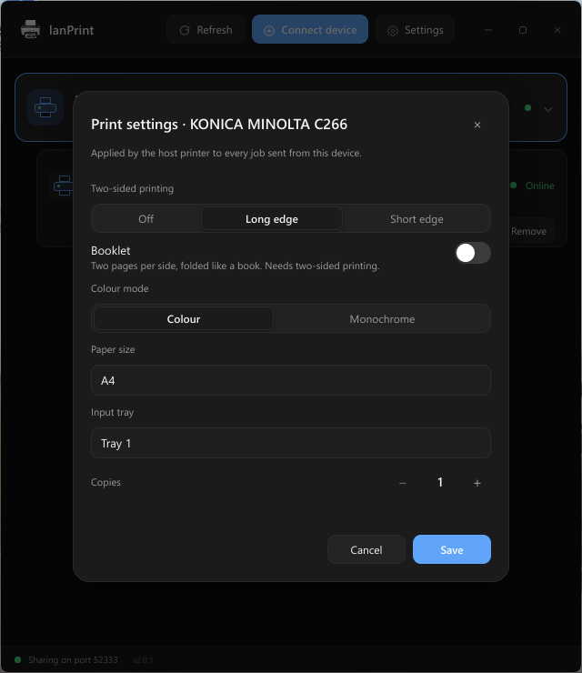
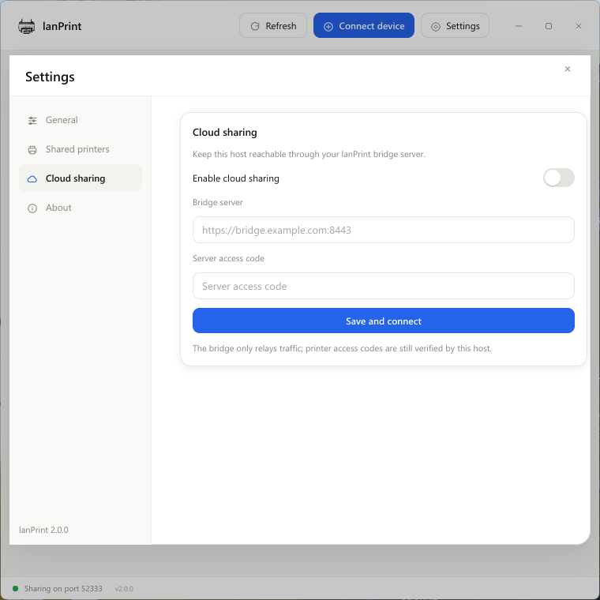

Installation
lanPrint is a single native binary. It starts in the system tray and keeps a small local API listening on port 52333.
Windows 7 / 8 / 10 / 11
Download lanPrint-*-setup.exe from Releases and run it. The installer copies lanPrint to Program Files, adds an inbound Windows Firewall rule for lanPrint.exe (API on TCP 52333 and mDNS discovery), enables autostart in the tray and starts the app. The portable lanPrint_*_Windows_x86_64.zip still works, but there you must allow the firewall prompt yourself, so the installer is recommended.
# PowerShell one-line installer (per user)
iwr -useb https://raw.githubusercontent.com/Kaiyuan/lanPrint/main/scripts/install.ps1 | iexmacOS 10.15+
Download the macOS archive for your CPU (Intel or Apple Silicon), move LanPrint.app to Applications and launch it. The first launch may require right-click → Open because the build is ad-hoc signed.
Ubuntu / Debian / UOS
Extract the Linux archive and run sudo ./install.sh. It installs the binary, desktop entry and the CUPS backend used by client queues. The app works on X11 and Wayland; the tray uses StatusNotifierItem, so GNOME needs the AppIndicator extension.
# one-line install
curl -fsSL https://raw.githubusercontent.com/Kaiyuan/lanPrint/main/scripts/install.sh | bashThe main window
One window covers both roles. Click a host to expand its printers; use the toolbar to refresh, connect another host, or open settings.


Share printers from this computer
Every lanPrint instance can be a host. No Samba, IPP or WSD setup is involved.
Set a host access code
Open Settings → General and choose an access code of at least four characters. Clients cannot list or use your printers without it.
Select printers
Open Settings → Shared printers and toggle the printers you want to share. Each printer can have an optional additional access code.
Check the status bar
The status bar shows “Sharing on port 52333” and advertises the host over mDNS as _lanprint._tcp.local..
Scanning
All-in-one printers are detected automatically. Windows uses WIA, Linux and macOS use SANE (scanimage). Install the vendor driver if the scanner is not detected.

Host activity
Settings → Activity shows when each device connected and what it printed. Every entry carries the time, the device name and a LAN or Cloud marker, so you can tell remote access from the local network. The last 500 events are kept on this host.
Connect to a host and add printers
Scan or enter the address
Click “Connect device”. lanPrint scans the LAN with mDNS. If the host is on another subnet, click “Enter manually” and type its device name or IP address.
Test and save
Enter the host access code, click “Test connection”, then “Save”. The host appears in the device list with an online indicator.
Add a printer
Select the host, choose a shared printer and click “Add”. lanPrint creates a local virtual queue that renders jobs to PDF and forwards them to the host. The printer appears in every application’s print dialog.
Test and remove
Use “Test print” to send a colour A4 test page through the host. “Remove” deletes the local queue and stops forwarding; the host is not changed.

Scanning
Printers that expose a scanner show a Scan button after they are added. Scanning runs on the host, where the device is physically connected, and the result is saved on the client.

- Windows: WIA is used. Flatbed and document feeder sources are supported when the driver exposes them.
- Linux/macOS: SANE (
scanimage) is used. Installsane-utilsand the vendor backend. - Choose 150/200/300/600 dpi, color or grayscale, flatbed or ADF. Files are saved to
Downloads/lanPrint-scans.
Print settings
The client renders every job to PDF and sends it to the host, which prints it with the real printer driver. lanPrint reads the host printer’s capabilities (paper sizes, trays, duplex, booklet, colour, copies) and shows them in the “Print settings” dialog of each added printer.
On Windows the client creates its local queue with the same driver as the host printer whenever that driver is installed. The system print dialog then shows the printer’s real duplex, colour, tray and finishing options; lanPrint only falls back to a PDF queue when the driver is missing.
Open the dialog
Click the settings button on an added printer. Only options the host printer really supports are shown.
Pick the options
Two-sided printing (long or short edge), booklet, colour mode, paper size, input tray and copies. Booklet imposes two pages per side and needs duplex.
Save
The settings are stored on this client and sent with every job. The host clamps them to the printer’s real capabilities, so an unsupported value never reaches the driver.

Cloud sharing
Cloud sharing lets a client reach a host that is behind NAT or on a different network. All traffic goes through your own bridge server.
Deploy a bridge
Follow the server guide. You need the bridge URL and the server access code.
Enable it on the host
Settings → Cloud sharing: enable, enter the bridge URL and server code, then save. lanPrint registers and receives an 8-character share code.
Connect on the client
Connect device → Enter manually → enable “Connect through a cloud bridge”, enter the bridge URL and share code, plus the host access code.
Add printers exactly as on the LAN. The host still verifies every printer access code; the bridge only relays traffic.

Troubleshooting
The host is not found by the LAN scan
Make sure both devices are on the same subnet, the host password is set and at least one printer is shared. Some networks block multicast DNS; use manual entry with the host IP instead.
Connection refused or timed out
Allow TCP port 52333 through the host firewall. On Windows the installer creates a firewall rule; if you installed manually, add one for lanPrint.exe.
Adding a printer fails on Linux
lanPrint needs the CUPS backend symlink and permission to run lpadmin. Run the installer with sudo, then retry. Check lpstat -e and /var/log/cups/error_log.
The client prints but the page is blank
lanPrint sends PDF to the host and the host renders each page and prints it with the real printer driver, so no PDF reader is needed. If pages are still blank, check that the printer driver is installed on the host and that the host prints a test page locally.
Scanner not detected
Install the vendor WIA/SANE driver. On Linux check scanimage -L as the user that runs lanPrint. On Windows the WIA service must be running.
The tray icon is missing on Linux
Slint uses StatusNotifierItem. GNOME requires the AppIndicator/KStatusNotifierItem extension; KDE, XFCE, Cinnamon and UOS usually work out of the box.